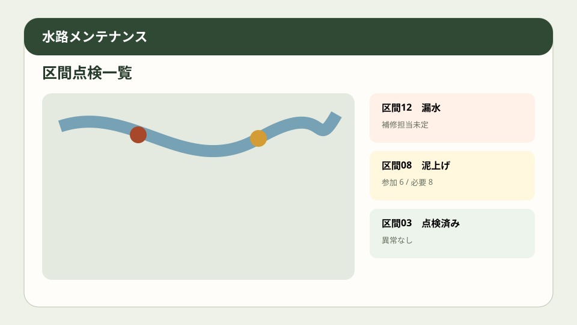
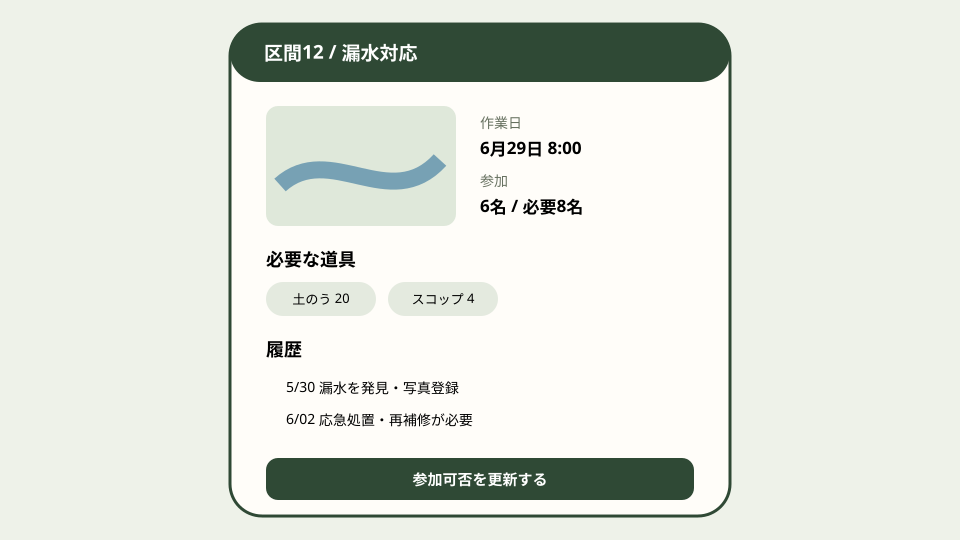

Question Note
農業用水路の共同点検と補修引き継ぎを支える小規模サービス案


全体像
農林水産省は、農村人口の減少で集落が保全してきた用排水路や農道の機能維持が難しくなり、営農と食料供給のリスクになるとしています。課題は施設更新だけでなく、区間別の点検、泥上げ等の共同作業、補修依頼、過去履歴が別々で、少人数の役員に集中することです。
どの社会問題を切り出すか
初年度は小規模土地改良区・保全活動組織の生活圏内水路100区間の管理に限定します。
| 現場課題 | 結果 | 既存手段の限界 |
|---|---|---|
| 場所の呼び名が属人的 | 異常箇所を再発見できない。 | 紙地図と口頭では位置が曖昧。 |
| 共同作業の出欠が散る | 必要人数・道具が不足する。 | 電話連絡は変更履歴が残らない。 |
| 補修履歴が分離 | 同じ応急処置を繰り返す。 | 表計算と写真フォルダを結べない。 |
既存の仕組みで足りない点
- 紙は地図上の区間と写真履歴を結べない。
- 電話・チャットは作業参加、道具、完了確認の集計に弱い。
- 表計算は現場スマホ入力、権限、添付、期限通知を一体化しにくい。
サービス案
水路区間ごとに点検、異常、共同作業、補修依頼、完了写真をつなぐ軽量Web台帳です。
- 地図・区間番号・写真で異常を記録する。
- 草刈り、泥上げ、漏水確認の作業日と必要人数を管理する。
- 参加可否、道具、外注要否を集計する。
- 応急・恒久補修と費用・完了日を残す。
- 交付金活動記録に使えるCSV/PDFを出す。
100万円規模に抑えた市場設定
近隣60組織へ直接営業し18組織を獲得します。
| 月額 | 4,500円 x 18 x 12 | 972,000円 |
|---|---|---|
| 導入支援 | 12,000円 x 4 | 48,000円 |
| 初年度売上 | 合計 | 1,020,000円 |
収益モデル
- 基本: 組織単位の月額
- 追加: 紙地図の区間登録
- 追加: 年度報告作成支援
AWSシステム要件と支出
東京リージョン、無料枠を除外、1 USD = 150円、18組織・200 MAU・月2万APIリクエストの概算です。実装前にAWS Pricing Calculatorで再計算します。
| AWSリソース | 用途 | 想定使用量 | 月額 | 年額 |
|---|---|---|---|---|
| S3 + CloudFront | Web画面、点検写真、PDF配信 | 10GB、月10GB配信 | 800円 | 9,600円 |
| Cognito | 土地改良区・作業者の認証 | 200 MAU | 300円 | 3,600円 |
| API Gateway | 点検・作業・補修API | 月2万リクエスト | 300円 | 3,600円 |
| Lambda | 作業集計、期限通知、帳票生成 | 月2万実行 | 300円 | 3,600円 |
| DynamoDB | 水路区間、異常、写真参照、作業日、参加者、道具、補修、費用、履歴を保存 | オンデマンド1GB、月5万読書き | 500円 | 6,000円 |
| SES | 作業日と補修期限メール | 月2,000通 | 100円 | 1,200円 |
| CloudWatch + Backup + Budgets | ログ、日次バックアップ、予算通知 | ログ1GB | 500円 | 6,000円 |
| Route 53 | DNS | 1ホストゾーン | 100円 | 1,200円 |
| Location Service | 水路区間の地図表示 | 月1万地図リクエスト | 1,000円 | 12,000円 |
| AWS利用料 | 合計 | 3,900円 | 46,800円 | |
| 専門確認 | 作業安全・交付金様式 | 単発 | - | 60,000円 |
| 年間支出 | 合計 | 106,800円 | ||
AIを使った開発見積もり
AIで区間台帳、CRUD、帳票、テストデータを補助し、安全手順と現場用語は人が検証します。
| 要件整理 | 帳票項目を構造化 | 4日 |
|---|---|---|
| 試作 | 地図・作業一覧 | 2週間 |
| 実装 | 通知・帳票・権限 | 2週間 |
| 検証 | 現地受入テスト | 1週間 |
通常8〜10週間相当を5〜6週間に短縮します。
売上・支出・利益
売上 - 支出 = 利益
| 売上 | 1,020,000円 |
|---|---|
| 支出 | 106,800円 |
| 利益 | 913,200円 |
必要人数と人材要件
実行者1名 + 単発外注。実行者はWeb実装と現場導入を担い、土地改良制度・作業安全・利用規約を専門家へ確認します。
リスクと最初の検証
- 高齢参加者に入力負担が偏る。
- 電波の弱い区間で使えない。
- 事故責任や補修判断をサービスが負うと誤解される。
2組織・100区間・共同作業2回で、記録時間、連絡回数、再発箇所、支払い意思を検証します。
結論
共同点検から補修完了までの区間台帳に絞れば、地域インフラ管理の属人化を100万円規模で改善できます。